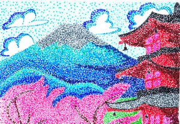
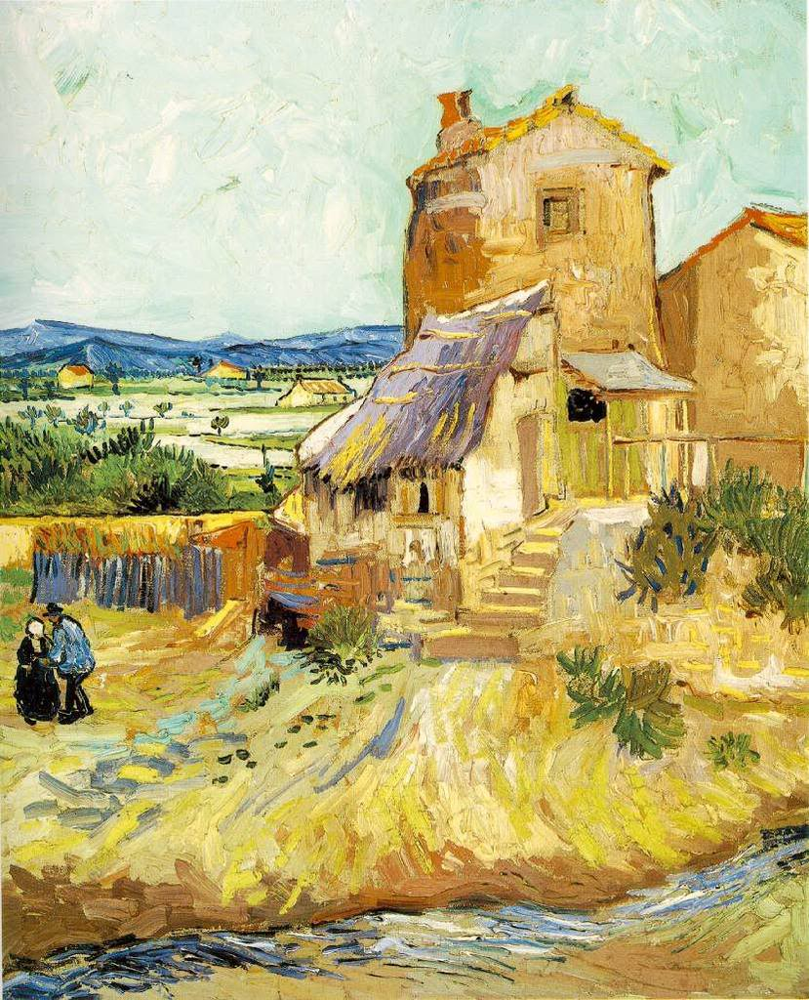
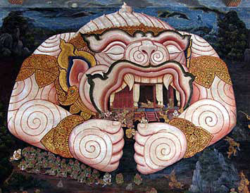
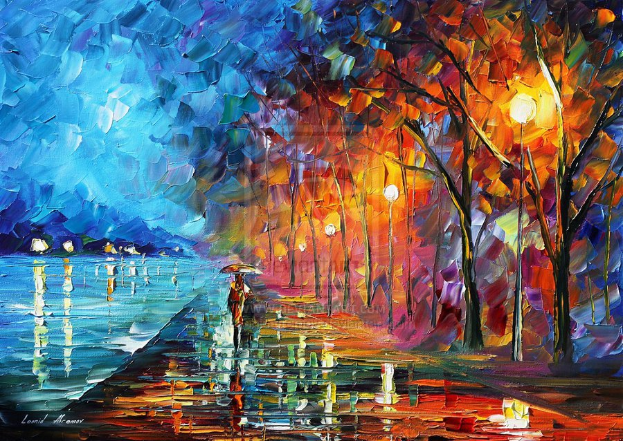

พื้นฐานทัศนศิลป์ (Visual Arts Elements)

ทัศนศิลป์คือศิลปะที่รับรู้ได้ด้วยการมองเห็น โดยมีองค์ประกอบพื้นฐาน (Elements of Art) และหลักการจัดองค์ประกอบ (Principles of Art) ดังนี้1. ทัศนธาตุ (Elements of Art)จุด (Dot): รอยหรือแต้มที่มีลักษณะกลมๆ เป็นจุดเริ่มต้นของเส้นและรูปทรง เส้น (Line): จุดหลายๆ จุดที่ต่อกัน มีทิศทาง เช่น เส้นตรง เส้นโค้ง เส้นหยัก ซึ่งให้ความรู้สึกแตกต่างกัน รูปร่างและรูปทรง (Shape & Form): รูปร่าง (Shape): ภาพ 2 มิติ (มีความกว้าง-ความยาว) รูปทรง (Form): ภาพ 3 มิติ (มีความกว้าง-ความยาว-ความหนา/ลึก) น้ำหนักอ่อน-แก่ (Value): ความเข้มและความสว่างของสีหรือแสงเงา ทำให้เกิดมิติ สี (Color): ทฤษฎีสีและวงล้อสี (Color Wheel) สีขั้นที่ 1 (Primary Colors): แดง, เหลือง, น้ำเงิน สีขั้นที่ 2 (Secondary Colors): ส้ม, เขียว, ม่วง (เกิดจากการผสมสีขั้นที่ 1) สีขั้นที่ 3 (Tertiary Colors): สีที่เกิดจากการผสมสีขั้นที่ 1 และ 2 วรรณะของสี (Color Tone): วรรณะร้อน (Warm Tone) และ วรรณะเย็น (Cool Tone) พื้นผิว (Texture): ลักษณะของผิวสัมผัส เช่น หยาบ, เรียบ, ขรุขระ, นุ่ม พื้นที่ว่าง (Space): บริเวณว่างรอบๆ หรือภายในรูปทรง ช่วยให้ภาพดูโปร่งและไม่อึดอัด 2. หลักการจัดองค์ประกอบศิลป์ (Principles of Design)เอกภาพ (Unity): ความเป็นอันหนึ่งอันเดียวกันของภาพ สมดุล (Balance): ความเท่ากันของน้ำหนักในภาพ ทั้งแบบเท่ากันสองข้าง (Symmetrical) และไม่เท่ากันสองข้าง (Asymmetrical) จุดเด่น (Emphasis/Focal Point): การสร้างจุดสนใจหลักในภาพ จังหวะและความกลมกลืน (Rhythm & Harmony): การซ้ำกันหรือการร้อยเรียงกันอย่างมีระเบียบ
ประวัติศาสตร์ศิลปะโลก (World Art History)

การเรียนรู้พัฒนาการของศิลปะในแต่ละยุคสมัย ตั้งแต่อดีตจนถึงปัจจุบัน 1. ศิลปะยุคก่อนประวัติศาสตร์ (Prehistoric Art)การวาดภาพบนผนังถ้ำเพื่อการล่าสัตว์หรือพิธีกรรม เช่น ภาพเขียนสีถ้ำลาโกซ์ (Lascaux) ในฝรั่งเศส หรือรูปสลัก Venus of Willendorf 2. ศิลปะยุคโบราณ (Ancient Art)อียิปต์: เน้นเรื่องความเชื่อหลังความตาย สถาปัตยกรรมพีระมิด ภาพเขียนฝาผนังไร้มิติแต่มีระเบียบชัดเจน กรีกและโรมัน (Classical Art): เน้นความสมบูรณ์แบบของร่างกายมนุษย์ สถาปัตยกรรมเสาแบบดอริก ไอโอนิก และคอรินเธียน 3. ศิลปะยุคเรอเนสซองส์ (Renaissance)ยุคฟื้นฟูศิลปวิทยาการ เน้นความสมจริง กฎทัศนียภาพ (Perspective) และแสงเงา ศิลปินสำคัญ: Leonardo da Vinci (Mona Lisa), Michelangelo (David), Raphael 4. ลัทธิศิลปะตะวันตกสมัยใหม่ (Modern Art Movements)Impressionism: เน้นจับแสงและสีในบรรยากาศจริง (Claude Monet) Post-Impressionism: เน้นอารมณ์และฝีแปรงที่ฉูดฉาด (Vincent van Gogh) Cubism: การย่อยรูปทรงธรรมชาติให้เป็นเหลี่ยมลูกบาศก์ (Pablo Picasso) Surrealism: ศิลปะเหนือจริง ถ่ายทอดความฝันและจิตใต้สำนึก (Salvador Dalí)
ศิลปะไทยและวัฒนธรรมท้องถิ่น(Thai Traditional Art)

เอกลักษณ์ทางศิลปะของไทยที่สะท้อนถึงวิถีชีวิต ความเชื่อ และศาสนาพุทธ 1. ประเภทของศิลปะไทยจิตรกรรมไทย (Thai Painting): ภาพเขียนตัดเส้นแบบ 2 มิติ ไม่เน้นแสงเงา แต่เน้นความงดงามของเส้นอ่อนช้อย เรื่องราวเกี่ยวกับพุทธประวัติ ไตรภูมิ และรามเกียรติ์ ประติมากรรมไทย (Thai Sculpture): การหล่อพระพุทธรูปในยุคต่างๆ (เช่น สุโขทัย อยุธยา รัตนโกสินทร์) ซึ่งพระพุทธรูปยุคสุโขทัยได้รับการยกย่องว่ามีความอ่อนช้อยงดงามที่สุด สถาปัตยกรรมไทย (Thai Architecture): วัด วัง และเรือนไทย มีการยกจั่ว ช่อฟ้า ใบระกา หางหงส์ และการย่อมุมไม้สิบสอง 2. ลายไทยพื้นฐาน (Thai Patterns)กระหนก (Kanok): ลายพื้นฐานที่ประดิดประดอยมาจากเปลวไฟ กระจัง (Krajang): ลายที่ดัดแปลงมาจากกลีบบัว พุ่มข้าวบิณฑ์ (Phum Khao Bin): ลายที่มีรูปทรงคล้ายพุ่มพานข้าว 3. ศิลปะประยุกต์และประเพณีไทยงานเครื่องเงิน เครื่องสาน หัวโขน ผ้าไทย และงานประดิดประดอยในเทศกาล เช่น ลอยกระทง สงกรานต์
เทคนิคการสร้างสรรค์ผลงาน (Art Techniques & Media)

รวมการปฏิบัติและการใช้อุปกรณ์ในแขนงต่างๆ ของทัศนศิลป์ 1. งานวาดเส้นและระบายสี (Drawing & Painting)การวาดเส้น (Drawing): การใช้ดินสอ ดินสอดำ (Charcoal) ปากกา หรือเกรยอง เพื่อถ่ายทอดโครงสร้าง แสง และเงา สีน้ำ (Watercolor): เทคนิคระบายเปียกบนเปียก เปียกบนแห้ง มีลักษณะโปร่งแสง (Transparent) สีน้ำมัน (Oil Color) & สีอะคริลิก (Acrylic Color): สีที่มีเนื้อทึบแสง ซ้อนทับได้ แห้งช้า (สีน้ำมัน) หรือแห้งไว (สีอะคริลิก) 2. งานภาพพิมพ์ (Printmaking)การถ่ายโอนภาพจากแม่พิมพ์ลงบนกระดาษหรือวัสดุอื่น ประเภทของแม่พิมพ์: แม่พิมพ์ผิวนูน (Relief Print): เช่น แกะสลักไม้ (Woodcut), ยางลบ/แม่พิมพ์ตลับแกะ แม่พิมพ์ร่องลึก (Intaglio): เช่น Etching, Engraving แม่พิมพ์พื้นราบ (Planographic): เช่น Lithography แม่พิมพ์ตะแกรง (Stencil/Serigraphy): เช่น Silk Screen 3. งานปั้นและปั้นรูป (Sculpture & Modeling)การเพิ่มเนื้อ (Additive): การใช้นวด ดินน้ำมัน ดินเหนียว หรือปูนปลาสเตอร์ การลดเนื้อ (Subtractive): การแกะสลักไม้ หิน หรือโฟม ประเภทงานปั้น: ปั้นนูนต่ำ (Bas-Relief), ปั้นนูนสูง (High-Relief), และปั้นลอยตัว (Free-Standing)